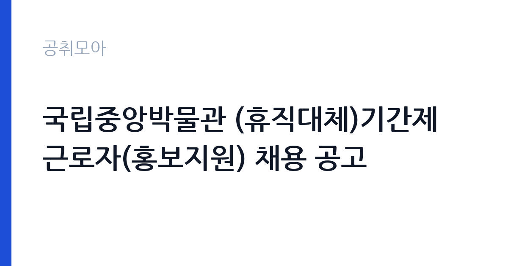

[국가기관] 국립중앙박물관 (휴직대체)기간제 근로자(홍보지원) 채용 공고
문화체육관광부 국립중앙박물관 · 서울 · 마감 2026-10-01 (D-9) · 출처 나라일터

한눈에 보는 모집 조건
| 기관 | 문화체육관광부 국립중앙박물관 |
|---|---|
| 공고명 | 국립중앙박물관 (휴직대체)기간제 근로자(홍보지원) 채용 공고 |
| 고용형태 | 기간제 |
| 근무지 | 서울 |
| 게시일 | 2026-09-22 |
| 마감일 | 2026-10-01 (D-9) |
지원자격, 이렇게 읽으세요
- 기간제 근로자(휴직대체) 1명
- 접수 ~2026-10-01 마감
- 세부 조건은 원문 공고문 확인
자격요건의 세부 내용은 원문 공고문에서 확인하셔야 합니다. 홍보지원 분야이므로 관련 전공이나 언론·홍보·마케팅 분야 경험이 우대될 가능성이 큽니다. 휴직대체 기간제 근로자로 결격사유와 제출서류는 박물관 공고문의 기준에 따릅니다. 디자인 툴 활용 능력과 보도자료 작성 경험이 있다면 자기소개서에 구체적으로 기술하시기 바랍니다. 접수 방법과 마감 시각도 원문에서 반드시 확인하시기 바랍니다.
이 공고의 포인트
첫 번째 포인트는 국립중앙박물관이라는 국내 최고 수준의 문화기관에서 일한다는 점입니다. 대규모 전시와 국제 교류의 홍보 현장을 경험할 수 있습니다. 두 번째로 홍보지원 업무는 보도자료와 SNS, 뉴스레터 등 다양한 채널을 다루므로 실무 포트폴리오를 쌓기에 좋습니다. 세 번째로 서울 용산 근무로 출퇴근이 편리하며, 휴직대체라 채용 절차가 비교적 빠르게 진행될 수 있습니다. 문화예술 홍보 분야로 진로를 정한 분께 좋은 발판이 될 수 있습니다.
전형은 어떻게 진행되나
전형은 서류전형과 면접전형으로 진행되는 것이 일반적이며, 세부 일정은 나라일터의 원문 공고에서 확인하시기 바랍니다. 접수 기간이 짧을 수 있으니 원문을 확인하는 즉시 지원서를 작성하시기 바랍니다. 서류전형에서는 홍보 관련 경험과 자기소개서의 완성도가 중요하며, 면접에서는 박물관 전시에 대한 관심과 실무 역량을 평가합니다. 합격자 발표 이후 임용까지 빠르게 진행될 수 있으니 일정을 비워두시기 바랍니다.
이런 분께 추천해요
- 박물관과 문화예술 분야 홍보에 관심 있으신 분
- 언론·홍보·마케팅 관련 경험으로 포트폴리오를 쌓고 싶으신 분
- 서울 근무가 가능하고 휴직대체 기간 동안 성실히 근무하실 분
지원 전 체크리스트
- 홍보 관련 경험과 활용 가능한 툴을 정리했습니다
- 휴직대체의 근무 기간 조건을 원문에서 확인했습니다
- 자기소개서에 박물관 홍보에 대한 관심을 구체적으로 담았습니다
- 원문 공고문의 접수방법과 마감일을 확인했습니다
모집 일정과 제출 타이밍
접수는 2026년 10월 1일에 마감됩니다. 접수 기간이 일주일 정도로 짧으므로 서둘러 지원하시기 바랍니다. 서류 합격자 발표와 면접은 마감 직후 빠르게 진행될 가능성이 크니 면접 준비도 미리 시작하시기 바랍니다. 휴직대체라 임용 시기가 정해져 있을 수 있으므로, 합격 후 즉시 근무가 가능하도록 일정을 정리해 두시기 바랍니다.
직무 이해하기: 국가기관
홍보지원 기간제 근로자는 국립중앙박물관의 전시와 교육, 행사 홍보를 지원합니다. 보도자료 작성 보조와 홍보 채널 운영 지원, 홍보물 제작 협업 등의 업무를 맡게 됩니다. 서울 용산의 박물관 본관에서 근무하며, 문화체육관광부 소속 국가기관의 일원으로 일하게 됩니다. 국가기관 카테고리 공고입니다.
자기소개서 작성 팁
자기소개서에서는 문화예술과 박물관에 대한 관심을 구체적인 경험과 함께 서술하시기 바랍니다. 관람했던 전시나 참여했던 문화행사를 언급하면 진정성이 전달됩니다. 홍보 실무 경험(기사 작성, SNS 운영, 디자인 등)을 수치와 함께 제시하시기 바랍니다. 휴직대체 기간 동안 성실히 근무하겠다는 의지를 명확히 밝히시기 바랍니다.
면접 준비 포인트
면접에서는 박물관 전시에 대한 관심과 홍보 아이디어를 질문받을 가능성이 큽니다. 최근 국립중앙박물관의 주요 전시를 미리 살펴보고 본인의 생각을 정리해 두시기 바랍니다. 실무 툴 활용 능력을 묻는다면 사용 가능한 프로그램과 수준을 솔직하게 답변하시기 바랍니다. 밝고 적극적인 태도가 좋은 인상을 줄 수 있습니다.
급여·근무조건 읽는 법
보수 수준은 원문 공고문에서 확인하셔야 합니다. 국립중앙박물관 기간제 근로자의 급여는 문체부 소속 기관의 기간제 보수 기준이 적용되며, 통상 월급제로 지급됩니다. 정확한 금액과 수당 구성, 4대 보험 적용 여부는 원문에서 확인하시기 바랍니다. 휴직대체 기간에 따른 계약 조건도 원문에서 함께 살펴보시기 바랍니다.
자주 묻는 질문
- 휴직대체 기간제 근로자는 어떤 형태입니까
휴직자의 복귀까지 기간을 정해 근무하는 형태입니다. 근무 예정 기간과 연장 가능 여부는 원문 공고문에서 확인하시기 바랍니다. - 홍보 관련 전공이 필수입니까
세부 자격요건은 원문에서 확인하시기 바랍니다. 관련 전공이나 경험이 우대되는 경우가 많으니 자기소개서에 관련 경험을 구체적으로 기술하시기 바랍니다. - 근무지는 어디입니까
서울 용산에 위치한 국립중앙박물관에서 근무하게 됩니다. 세부 근무 부서는 임용 시 안내받으시게 됩니다.
함께 보면 좋은 공고
[국가기관] 과학기술정보통신부 전문임기제 다급(과학기술 인력양성) 경력경쟁채용 재공고 — 마감 2026-10-06[국가기관] 육군교육사령부 한시임기제군무원(응급구조담당) 채용 — 마감 2026-10-06[국가기관] 2026년 제5회 식품의약품안전처 공무원(임기제) 경력경쟁채용시험 공고 — 마감 2026-10-06출처: 나라일터 공개정보를 바탕으로 공취모아가 정리한 안내글입니다. 모집 조건·일정은 변경될 수 있으니 지원 전 반드시 원문 공고문을 확인하세요. 본 글은 정보 제공용이며 합격을 보장하지 않습니다.